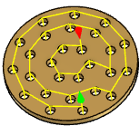

<div id="reverseOrder"><p>現在選択されているツールパスの順序を変更して、反対の位置から開始できるようにします。</p>
<table class="tipTable" cellspacing="10">
<tr>
<td><center></center></td>
<td><center></center></td>
</tr><tr>
<td><center><p><b>無効</b><br>
<em>もっとも内側の位置の穴が最初になります。</em></p></center></td>
<td><center><p><b>有効</b><br>
<em>最初の穴は、最も外側の位置です。</em></p></center></td>
</tr></table>
</div>